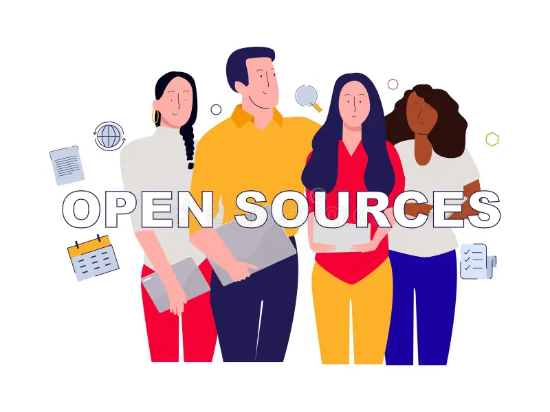

What is Open Source Software?
Normally, commercial software is locked down. The original source code is kept secret by the company that built it, meaning users can only run the program without knowing how it works under the hood. Open source changes this entirely. It refers to software whose source code is made publicly available for anyone to view, modify, and distribute.
Instead of a single corporate team working behind closed doors, open source projects invite developers from every corner of the planet to contribute their skills, fix bugs, and add brand-new features.

How Strangers Build Software Together
Building massive applications with thousands of contributors who have never met in person sounds chaotic. However, open source communities rely on structured workflows and clear rules to keep everything running smoothly. Anyone can propose a change, but it goes through strict peer reviews before becoming part of the official project.
The Contribution Workflow
- Find an open-source project that interests you on a platform like GitHub or GitLab.
- Fork or clone the repository to create your own isolated copy of the project.
- Write code to fix a bug or add a feature on a separate branch.
- Open a pull request to propose your changes to the original maintainers.
- Collaborate through code reviews, make adjustments, and get your code merged!
The Ecosystem of Collaboration
Collaboration requires reliable infrastructure. Version control systems allow hundreds of people to edit the same file simultaneously without overwriting each other's work. Furthermore, transparent communication channels keep everyone aligned.
| Component | Purpose |
|---|---|
| Version Control | Tracks history, manages changes, and merges code contributed by different people. |
| Issue Tracker | Helps report bugs, discuss feature requests, and assign tasks to volunteers. |
| License | A legal document defining what users and contributors are allowed to do with the code. |
Conclusion
Open source proves that strangers can build incredible technology together through shared trust, transparent communication, and powerful collaboration tools. Whether it is operating systems, databases, or programming libraries, open source powers much of the modern digital world. Anyone can start small—fixing a typo in documentation or resolving a minor bug is often the first step into the community.
- Learn more about open-source licensing at Choose an Open Source License.
- Read beginner guides on Open Source Guides.